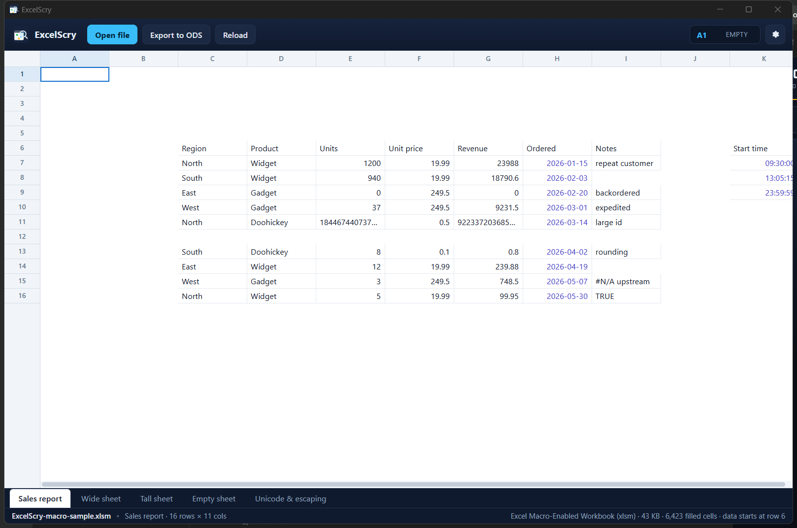

<!doctype html>
<meta charset="utf-8">
<title>ExcelScry — opening a macro-enabled .xlsm</title>
<style>
  body { margin: 0; background: #1b1d22; color: #c9cdd6;
         font: 14px/1.5 Segoe UI, system-ui, sans-serif; }
  figure { margin: 0; }
  img { display: block; width: 100%; height: auto; }
  figcaption { padding: 12px 16px; }
  code { color: #8fd3ff; }
</style>
<figure>
  
  <figcaption>
    ExcelScry opening <code>samples/ExcelScry-macro-sample.xlsm</code> — a genuine
    macro-enabled package (macroEnabled content type plus an
    <code>xl/vbaProject.bin</code> part). The status bar reads
    <strong>Excel Macro-Enabled Workbook (xlsm)</strong>.
  </figcaption>
</figure>
